The ArtiaX Model Toolbar is seperated into 9 parts, with the first 5 being the same as in the ArtiaX Toolbar, see that documentation for a description of the buttons in those sections.
The Fit Geometric Model section creates geometric models from the currently selected particles.
| icon | description | command equivalent |
| 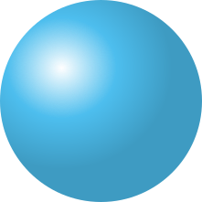 | fits a sphere to the currently selected particles using a least squares approach. | artiax fit sphere |
| 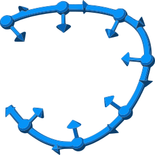 | fits a line that goes through the currently selected particles. | artiax fit line |
| 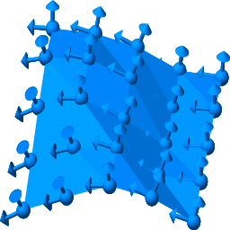 | fits a surface that goes through the currently selected particles. | artiax fit surface |
| 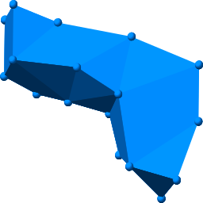 | creates a boundary around the currently selected particles. | artiax boundary |
| 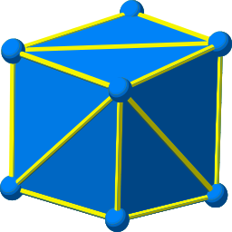 | creates triangles between all currently selected particles that are conencted with links. | artiax triangles from links |
The Links section creates and removes links. This can also be done manually with the Markers mouse modes.
| icon | description | command equivalent |
| 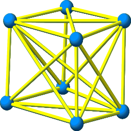 | creates Delaunay triangles between the currently selected particles. | artiax triangulate |
| 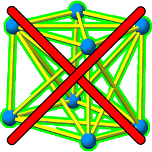 | removes all links connected to the currently selected particles. | artiax remove links |
The Mask section is used to create a mask from a selected geometric model, converting volumes to geomodels, and adding geomodels to volumes. Useful for "on the fly" segmentation of surfaces.
| icon | description | command equivalent |
| 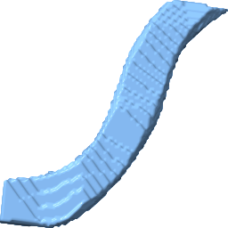 | creates a mask from the currently selected geometric model. | artiax mask |
| 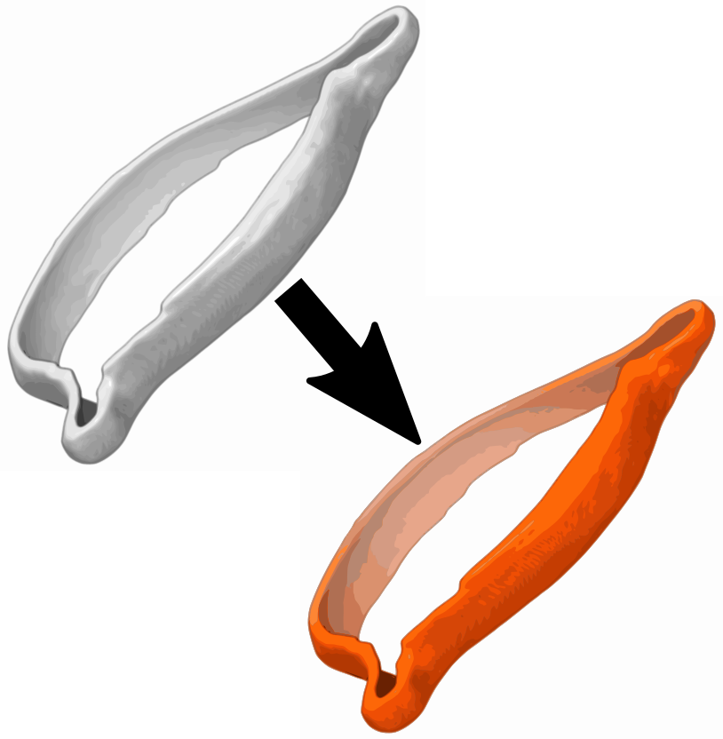 | converts the shown triangles of the selected volumes to a new geomodel. | artiax vol2geo |
| 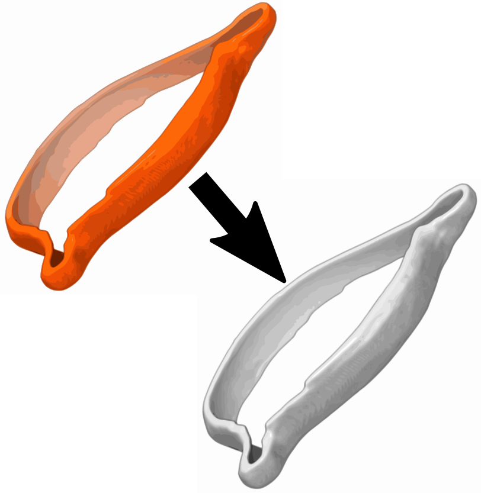 | creates a new volume using all currently shown geomodels . | artiax geo2vol |
The Delete Surface section sets the users mouse mode to allow for deleting or masking parts of models.
| icon | description |
| 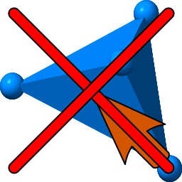 | deletes the picked tetrahedron from a boundary model. |
| 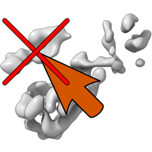 | masks the triangles connected to the pressed triangle. A radius can be set so as to not mask all connected triangles with the artiax mask triangle radius command. |